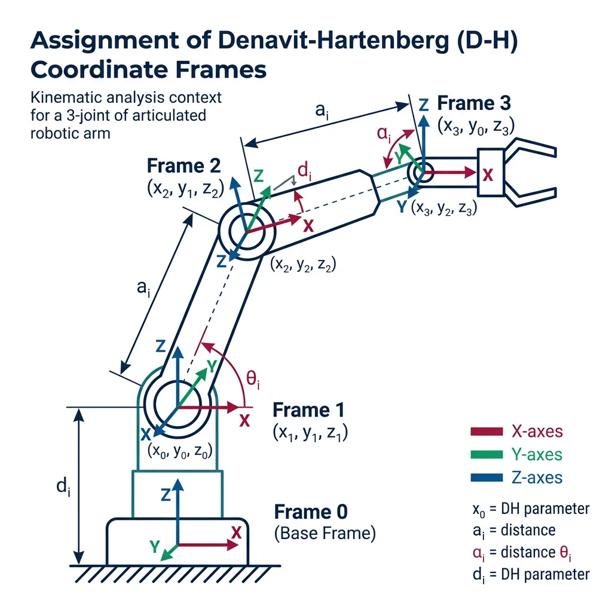
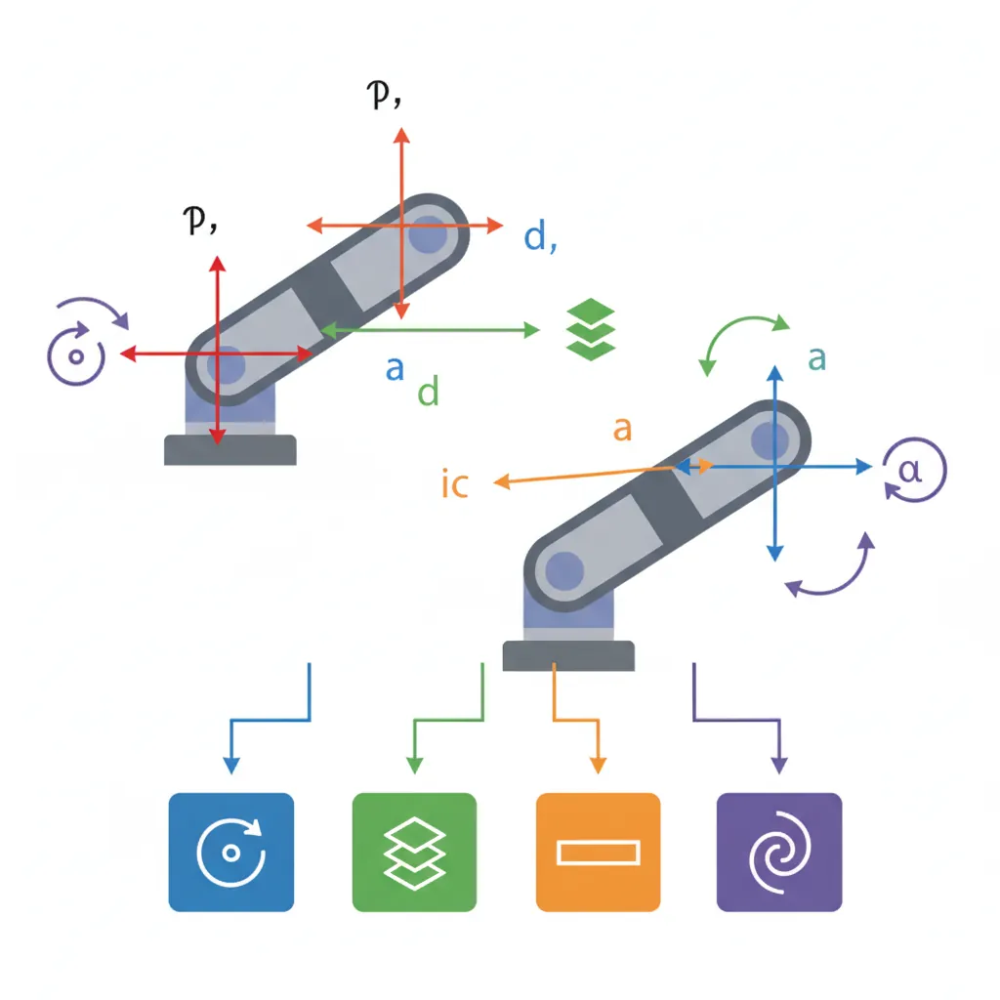
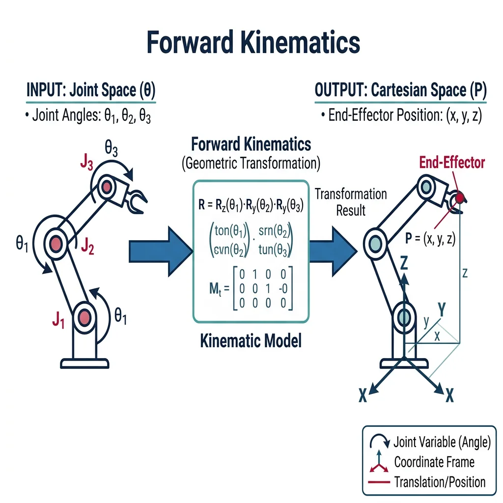
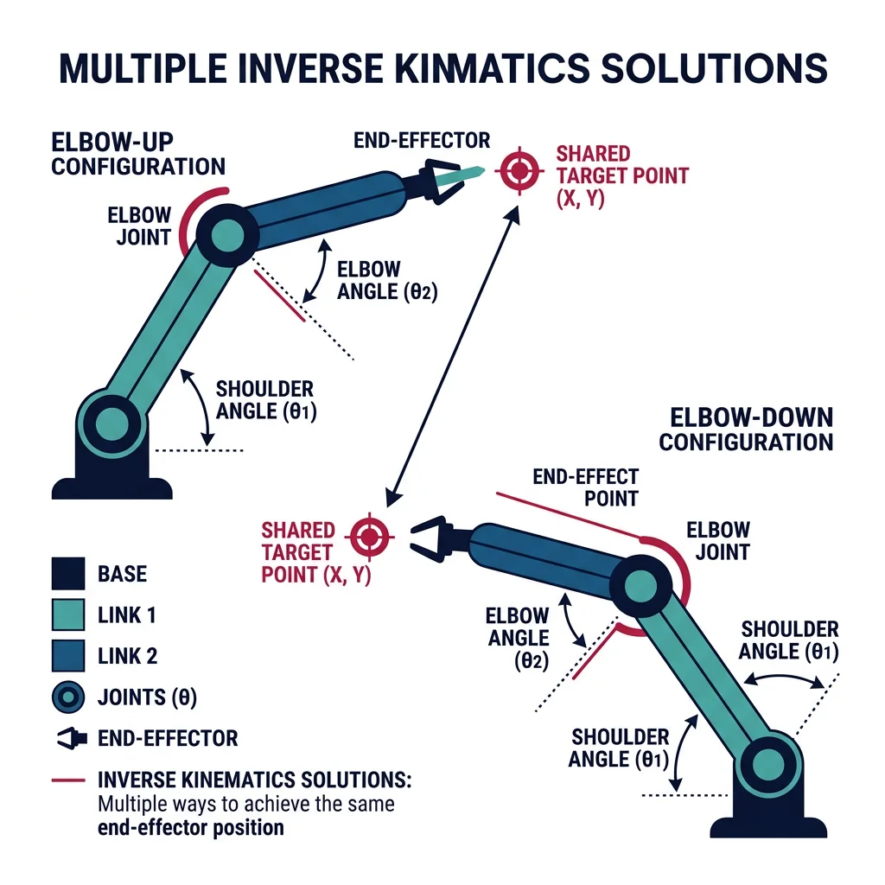
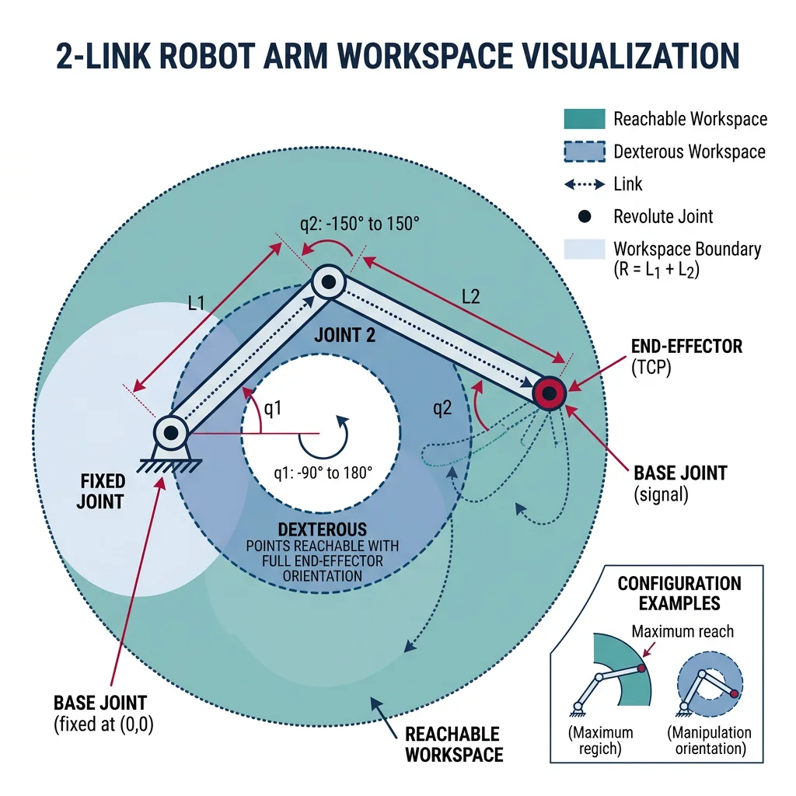

Coordinate Frames & Transformations
Robotics & Automation Mastery
Introduction to Robotics
History, types, DOF, architectures, mechatronics, ethicsSensors & Perception Systems
Encoders, IMUs, LiDAR, cameras, sensor fusion, Kalman filters, SLAMActuators & Motion Control
DC/servo/stepper motors, hydraulics, drivers, gear systemsKinematics (Forward & Inverse)
DH parameters, transformations, Jacobians, workspace analysisDynamics & Robot Modeling
Newton-Euler, Lagrangian, inertia, friction, contact modelingControl Systems & PID
PID tuning, state-space, LQR, MPC, adaptive & robust controlEmbedded Systems & Microcontrollers
Arduino, STM32, RTOS, PWM, serial protocols, FPGARobot Operating Systems (ROS)
ROS2, nodes, topics, Gazebo, URDF, navigation stacksComputer Vision for Robotics
Calibration, stereo vision, object recognition, visual SLAMAI Integration & Autonomous Systems
ML, reinforcement learning, path planning, swarm roboticsHuman-Robot Interaction (HRI)
Cobots, gesture/voice control, safety standards, social roboticsIndustrial Robotics & Automation
PLC, SCADA, Industry 4.0, smart factories, digital twinsMobile Robotics
Wheeled/legged robots, autonomous vehicles, drones, marine roboticsSafety, Reliability & Compliance
Functional safety, redundancy, ISO standards, cybersecurityAdvanced & Emerging Robotics
Soft robotics, bio-inspired, surgical, space, nano-roboticsSystems Integration & Deployment
HW/SW co-design, testing, field deployment, lifecycleRobotics Business & Strategy
Startups, product-market fit, manufacturing, go-to-marketComplete Robotics System Project
Autonomous rover, pick-and-place arm, delivery robot, swarm simBefore a robot can move to a desired location, it must understand where things are. In robotics, we describe the position and orientation of every link, joint, and tool using coordinate frames — imagine attaching a tiny set of XYZ axes to each part of the robot.

Right-Hand Rule & Frame Conventions
Robotics universally uses the right-hand coordinate system: point your right index finger along X, curl your fingers toward Y, and your thumb points along Z. Every frame in a robot chain follows this convention.
| Frame | Symbol | Description | Example |
|---|---|---|---|
| World / Base | {0} | Fixed reference frame, usually at robot base | Factory floor origin |
| Joint Frame | {i} | Attached to each joint axis | Shoulder, elbow, wrist |
| End-Effector | {n} | Attached to the tool tip | Gripper, welding torch |
| Object Frame | {obj} | Attached to a workpiece or target | Part on conveyor |
| Camera Frame | {cam} | Attached to a vision sensor | Eye-in-hand camera |
2D and 3D Rotations
Rotation matrices describe how one frame is oriented relative to another. In 2D, rotation by angle θ around the Z-axis is:
R(θ) = [[cos θ, −sin θ], [sin θ, cos θ]]
Properties: R is orthogonal (RT = R−1), det(R) = 1, columns are unit vectors
In 3D, we have three elementary rotation matrices — one for each axis:
import numpy as np
def rot_x(theta):
"""Rotation matrix about X-axis by theta radians."""
c, s = np.cos(theta), np.sin(theta)
return np.array([
[1, 0, 0],
[0, c, -s],
[0, s, c]
])
def rot_y(theta):
"""Rotation matrix about Y-axis by theta radians."""
c, s = np.cos(theta), np.sin(theta)
return np.array([
[ c, 0, s],
[ 0, 1, 0],
[-s, 0, c]
])
def rot_z(theta):
"""Rotation matrix about Z-axis by theta radians."""
c, s = np.cos(theta), np.sin(theta)
return np.array([
[c, -s, 0],
[s, c, 0],
[0, 0, 1]
])
# Example: Rotate 45 degrees about Z
angle = np.radians(45)
R = rot_z(angle)
print("Rotation matrix (Z, 45°):")
print(np.round(R, 4))
# Verify orthogonality: R^T * R = I
identity_check = R.T @ R
print("\nR^T @ R (should be identity):")
print(np.round(identity_check, 4))
# Verify determinant = 1
print(f"\ndet(R) = {np.linalg.det(R):.4f}")
Euler Angles vs. Quaternions
There are multiple ways to represent 3D orientation, each with trade-offs:
| Representation | Parameters | Pros | Cons |
|---|---|---|---|
| Rotation Matrix | 9 (3×3) | Direct transformation, no singularities | Redundant (6 constraints), expensive |
| Euler Angles (ZYX) | 3 (φ, θ, ψ) | Intuitive (roll, pitch, yaw) | Gimbal lock at θ = ±90° |
| Axis-Angle | 4 (k̂, θ) | Compact, physical meaning | Interpolation not straightforward |
| Quaternions | 4 (w, x, y, z) | No gimbal lock, smooth interpolation | Less intuitive, unit constraint |
Homogeneous Transformations
To combine rotation and translation into a single mathematical operation, we use 4×4 homogeneous transformation matrices. This elegant trick lets us chain multiple transformations by simple matrix multiplication.
T = [[R(3×3), p(3×1)], [0 0 0, 1]]
Where R is the rotation matrix and p = [px, py, pz]T is the translation vector.
import numpy as np
def homogeneous_transform(R, p):
"""Create a 4x4 homogeneous transformation matrix.
Args:
R: 3x3 rotation matrix
p: 3-element translation vector [x, y, z]
Returns:
4x4 homogeneous transformation matrix
"""
T = np.eye(4)
T[:3, :3] = R
T[:3, 3] = p
return T
def rot_z(theta):
c, s = np.cos(theta), np.sin(theta)
return np.array([[c, -s, 0], [s, c, 0], [0, 0, 1]])
# Example: Frame {1} is rotated 30° about Z and translated [2, 1, 0]
angle = np.radians(30)
R_01 = rot_z(angle)
p_01 = np.array([2.0, 1.0, 0.0])
T_01 = homogeneous_transform(R_01, p_01)
print("T_01 (Frame 0 to Frame 1):")
print(np.round(T_01, 4))
# Transform a point from frame {1} to frame {0}
point_in_1 = np.array([1.0, 0.0, 0.0, 1.0]) # [x, y, z, 1]
point_in_0 = T_01 @ point_in_1
print(f"\nPoint [1,0,0] in frame 1 = {np.round(point_in_0[:3], 4)} in frame 0")
# Inverse transformation: T^-1
T_10 = np.linalg.inv(T_01)
print("\nT_10 (inverse):")
print(np.round(T_10, 4))
# Verify: T_01 @ T_10 = I
print("\nT_01 @ T_10 (should be identity):")
print(np.round(T_01 @ T_10, 4))
The power of homogeneous transforms is composition: to find the pose of the end-effector relative to the base, we simply multiply the transforms for each joint in the chain:
Each Ti-1,i describes how frame {i} relates to frame {i-1}. Multiplying them gives the full base-to-tool transformation.
Denavit-Hartenberg Parameters
In 1955, Jacques Denavit and Richard Hartenberg introduced a systematic convention for assigning coordinate frames to robot links that requires only 4 parameters per joint instead of the general 6. This convention — called DH parameters — remains the standard method for describing robot geometry.

Historical Context: Why DH Matters
Before DH, each roboticist would assign frames differently, making it impossible to share kinematic models. DH parameters created a universal language: given the 4 parameters for each joint, any roboticist can reconstruct the exact geometry, simulate the robot, and compute its motion. Today, every robot datasheet and every simulation tool (ROS URDF, MATLAB Robotics Toolbox, Peter Corke's toolbox) uses DH parameters.
The Four DH Parameters
| Parameter | Symbol | Description | Measured Along/About |
|---|---|---|---|
| Link Length | ai | Distance between Zi-1 and Zi along Xi | Xi axis |
| Link Twist | αi | Angle between Zi-1 and Zi about Xi | About Xi |
| Link Offset | di | Distance between Xi-1 and Xi along Zi-1 | Zi-1 axis |
| Joint Angle | θi | Angle between Xi-1 and Xi about Zi-1 | About Zi-1 |
For a revolute joint, θi is the variable (it changes as the joint rotates) and the other three are constants. For a prismatic joint, di is the variable.
DH Transformation Matrix
Each joint's DH parameters produce a 4×4 transformation matrix:
import numpy as np
def dh_transform(theta, d, a, alpha):
"""Compute the DH transformation matrix for one joint.
Args:
theta: Joint angle (radians) - rotation about Z(i-1)
d: Link offset - translation along Z(i-1)
a: Link length - translation along X(i)
alpha: Link twist (radians) - rotation about X(i)
Returns:
4x4 homogeneous transformation matrix
"""
ct, st = np.cos(theta), np.sin(theta)
ca, sa = np.cos(alpha), np.sin(alpha)
return np.array([
[ct, -st*ca, st*sa, a*ct],
[st, ct*ca, -ct*sa, a*st],
[ 0, sa, ca, d],
[ 0, 0, 0, 1]
])
# Example: Single revolute joint with a=0.5m, alpha=0, d=0, theta=45°
T = dh_transform(
theta=np.radians(45), # Joint angle
d=0.0, # No offset
a=0.5, # Link length 0.5m
alpha=0.0 # No twist
)
print("DH Transform (theta=45°, d=0, a=0.5, alpha=0):")
print(np.round(T, 4))
print(f"\nEnd-effector position: x={T[0,3]:.4f}, y={T[1,3]:.4f}, z={T[2,3]:.4f}")
Forward Kinematics
Forward kinematics (FK) answers the question: "Given all joint angles, where is the end-effector?" It maps from joint space (the angles/displacements of each joint) to task space (the position and orientation of the tool).

FK Algorithm
- Assign DH parameters to each joint (θi, di, ai, αi)
- Compute the DH transformation matrix Ti-1,i for each joint
- Multiply all matrices: T0n = T01 · T12 · ... · T(n-1)n
- Extract position from column 4, orientation from the 3×3 submatrix
Practical Examples
Example 1: 2-Link Planar Arm
The simplest articulated robot: two revolute joints rotating in a plane. This is the "hello world" of robot kinematics.
Case Study: 2-Link Planar Manipulator
Setup: Two links of length L1 and L2, both rotating about the Z-axis (perpendicular to the plane). DH parameters: Joint 1: (θ1, 0, L1, 0), Joint 2: (θ2, 0, L2, 0).
Closed-form FK: x = L1·cos(θ1) + L2·cos(θ1+θ2), y = L1·sin(θ1) + L2·sin(θ1+θ2)
import numpy as np
def dh_transform(theta, d, a, alpha):
"""DH transformation matrix."""
ct, st = np.cos(theta), np.sin(theta)
ca, sa = np.cos(alpha), np.sin(alpha)
return np.array([
[ct, -st*ca, st*sa, a*ct],
[st, ct*ca, -ct*sa, a*st],
[ 0, sa, ca, d],
[ 0, 0, 0, 1]
])
def fk_2link(theta1, theta2, L1=1.0, L2=0.8):
"""Forward kinematics for a 2-link planar arm.
Args:
theta1, theta2: Joint angles in degrees
L1, L2: Link lengths in meters
Returns:
End-effector position [x, y]
"""
t1 = np.radians(theta1)
t2 = np.radians(theta2)
# DH parameters: [theta, d, a, alpha]
T01 = dh_transform(t1, 0, L1, 0)
T12 = dh_transform(t2, 0, L2, 0)
# Chain the transforms
T02 = T01 @ T12
return T02[:2, 3] # [x, y]
# Test multiple configurations
configs = [
(0, 0, "Fully extended along X"),
(45, 0, "Shoulder at 45°"),
(45, -45, "Elbow folded back"),
(90, -90, "L-shape pointing up"),
(0, 180, "Folded back on itself")
]
print("2-Link Planar Arm FK (L1=1.0m, L2=0.8m)")
print("-" * 55)
for t1, t2, desc in configs:
pos = fk_2link(t1, t2)
print(f"θ1={t1:4d}°, θ2={t2:4d}° → x={pos[0]:7.4f}, y={pos[1]:7.4f} ({desc})")
# Verify with closed-form equations
print("\nVerification with closed-form equations:")
t1, t2 = np.radians(45), np.radians(-45)
L1, L2 = 1.0, 0.8
x_cf = L1*np.cos(t1) + L2*np.cos(t1+t2)
y_cf = L1*np.sin(t1) + L2*np.sin(t1+t2)
pos_dh = fk_2link(45, -45)
print(f"Closed-form: x={x_cf:.4f}, y={y_cf:.4f}")
print(f"DH method: x={pos_dh[0]:.4f}, y={pos_dh[1]:.4f}")
print(f"Match: {np.allclose([x_cf, y_cf], pos_dh)}")
Example 2: 3-DOF Articulated Arm (RRR)
A more practical configuration: three revolute joints creating a robot that can reach points in 3D space (but with limited orientation control).
import numpy as np
def dh_transform(theta, d, a, alpha):
"""DH transformation matrix."""
ct, st = np.cos(theta), np.sin(theta)
ca, sa = np.cos(alpha), np.sin(alpha)
return np.array([
[ct, -st*ca, st*sa, a*ct],
[st, ct*ca, -ct*sa, a*st],
[ 0, sa, ca, d],
[ 0, 0, 0, 1]
])
def fk_3dof(theta1_deg, theta2_deg, theta3_deg,
d1=0.4, a2=0.3, a3=0.25):
"""Forward kinematics for a 3-DOF RRR articulated arm.
DH Table:
Joint | theta | d | a | alpha
------+--------+-----+-----+------
1 | theta1 | d1 | 0 | 90°
2 | theta2 | 0 | a2 | 0°
3 | theta3 | 0 | a3 | 0°
"""
t1 = np.radians(theta1_deg)
t2 = np.radians(theta2_deg)
t3 = np.radians(theta3_deg)
T01 = dh_transform(t1, d1, 0, np.pi/2)
T12 = dh_transform(t2, 0, a2, 0)
T23 = dh_transform(t3, 0, a3, 0)
T03 = T01 @ T12 @ T23
pos = T03[:3, 3]
return T03, pos
# Test configurations
print("3-DOF Articulated Arm FK")
print("DH: d1=0.4m, a2=0.3m, a3=0.25m")
print("-" * 60)
configs = [
(0, 0, 0, "Home position"),
(0, 90, 0, "Arm pointing straight up"),
(90, 45, -30, "Rotated and angled"),
(0, 0, -90, "Wrist bent 90°"),
]
for t1, t2, t3, desc in configs:
T, pos = fk_3dof(t1, t2, t3)
print(f"θ=({t1:4d}°,{t2:4d}°,{t3:4d}°) → "
f"x={pos[0]:.4f}, y={pos[1]:.4f}, z={pos[2]:.4f} ({desc})")
Case Study: PUMA 560 — The Robot That Defined FK
The Unimation PUMA 560, introduced in 1978, became the most studied robot in history. Its DH parameters were published by researchers at Stanford and Carnegie Mellon, making it the standard test case for FK/IK algorithms. The PUMA's 6-DOF configuration (three joints for position + spherical wrist for orientation) influenced the design of nearly all modern industrial robots. Today, most 6-DOF arms (ABB IRB, KUKA KR, FANUC LR Mate) follow the same kinematic architecture.
Key Insight: The PUMA demonstrated that separating the arm into a "positioning structure" (joints 1-3) and an "orientation structure" (spherical wrist, joints 4-6) greatly simplifies both FK and IK computation.
Example 3: 6-DOF Robot Arm
A complete 6-DOF manipulator provides full position and orientation control. Here we implement FK for a generic articulated arm with a spherical wrist:
import numpy as np
def dh_transform(theta, d, a, alpha):
"""DH transformation matrix."""
ct, st = np.cos(theta), np.sin(theta)
ca, sa = np.cos(alpha), np.sin(alpha)
return np.array([
[ct, -st*ca, st*sa, a*ct],
[st, ct*ca, -ct*sa, a*st],
[ 0, sa, ca, d],
[ 0, 0, 0, 1]
])
def fk_6dof(joint_angles_deg):
"""Forward kinematics for a generic 6-DOF arm with spherical wrist.
DH Table (inspired by typical industrial robot):
Joint | d | a | alpha
------+--------+-------+------
1 | 0.400 | 0.025 | 90°
2 | 0.000 | 0.315 | 0°
3 | 0.000 | 0.035 | 90°
4 | 0.365 | 0.000 | -90°
5 | 0.000 | 0.000 | 90°
6 | 0.080 | 0.000 | 0°
"""
# DH parameters: [d, a, alpha] for each joint
dh_params = [
[0.400, 0.025, np.pi/2], # Joint 1
[0.000, 0.315, 0.0], # Joint 2
[0.000, 0.035, np.pi/2], # Joint 3
[0.365, 0.000, -np.pi/2], # Joint 4
[0.000, 0.000, np.pi/2], # Joint 5
[0.080, 0.000, 0.0], # Joint 6
]
T = np.eye(4)
for i, (d, a, alpha) in enumerate(dh_params):
theta = np.radians(joint_angles_deg[i])
T_i = dh_transform(theta, d, a, alpha)
T = T @ T_i
return T
# Compute FK for home position
angles = [0, 0, 0, 0, 0, 0]
T = fk_6dof(angles)
print("6-DOF FK — Home Position (all zeros):")
print(f"Position: x={T[0,3]:.4f}, y={T[1,3]:.4f}, z={T[2,3]:.4f}")
print(f"Rotation matrix:\n{np.round(T[:3,:3], 4)}")
# Another configuration
angles2 = [30, -45, 60, 0, 45, 0]
T2 = fk_6dof(angles2)
print(f"\nFK for θ = {angles2}:")
print(f"Position: x={T2[0,3]:.4f}, y={T2[1,3]:.4f}, z={T2[2,3]:.4f}")
Inverse Kinematics
Inverse kinematics (IK) is the reverse problem: "Given a desired end-effector pose, what joint angles achieve it?" This is the harder problem — while FK always has a unique answer, IK can have zero, one, or multiple solutions.

IK Solution Methods
| Method | Type | Best For | Limitations |
|---|---|---|---|
| Geometric | Analytical | Simple planar arms (2-3 DOF) | Doesn't scale to complex robots |
| Algebraic | Analytical | Robots with closed-form solutions | Requires specific kinematic structures |
| Pieper's Method | Analytical | 6-DOF with spherical wrist | Wrist axes must intersect |
| Newton-Raphson | Numerical | Any kinematic structure | Local convergence, needs initial guess |
| Jacobian Pseudo-Inverse | Numerical | Redundant robots, real-time | May not converge near singularities |
| CCD (Cyclic Coordinate Descent) | Iterative | Animation, game engines | Slow convergence, no orientation |
| FABRIK | Iterative | Game dev, soft constraints | Heuristic, not physically exact |
Analytical IK: 2-Link Planar Arm
For the 2-link planar arm, we can derive a closed-form solution using the law of cosines:
import numpy as np
def ik_2link(x, y, L1=1.0, L2=0.8):
"""Analytical inverse kinematics for a 2-link planar arm.
Uses geometric approach with law of cosines.
Returns BOTH elbow-up and elbow-down solutions.
Args:
x, y: Desired end-effector position
L1, L2: Link lengths
Returns:
List of (theta1, theta2) solutions in degrees, or empty if unreachable
"""
# Check reachability
dist = np.sqrt(x**2 + y**2)
if dist > L1 + L2:
print(f" Target ({x:.2f}, {y:.2f}) is beyond reach (max={L1+L2:.2f})")
return []
if dist < abs(L1 - L2):
print(f" Target ({x:.2f}, {y:.2f}) is too close (min={abs(L1-L2):.2f})")
return []
# Law of cosines for theta2
cos_theta2 = (x**2 + y**2 - L1**2 - L2**2) / (2 * L1 * L2)
cos_theta2 = np.clip(cos_theta2, -1, 1) # Numerical safety
solutions = []
# Elbow-down (positive theta2)
theta2 = np.arccos(cos_theta2)
theta1 = np.arctan2(y, x) - np.arctan2(
L2 * np.sin(theta2),
L1 + L2 * np.cos(theta2)
)
solutions.append((np.degrees(theta1), np.degrees(theta2)))
# Elbow-up (negative theta2)
theta2_neg = -theta2
theta1_neg = np.arctan2(y, x) - np.arctan2(
L2 * np.sin(theta2_neg),
L1 + L2 * np.cos(theta2_neg)
)
solutions.append((np.degrees(theta1_neg), np.degrees(theta2_neg)))
return solutions
# Test IK
targets = [
(1.5, 0.5, "Moderate reach"),
(0.3, 0.3, "Close to base"),
(1.8, 0.0, "Near full extension"),
(0.0, 1.0, "Straight up"),
(2.5, 0.0, "Beyond reach"),
]
print("2-Link Planar Arm IK (L1=1.0, L2=0.8)")
print("=" * 65)
for x, y, desc in targets:
print(f"\nTarget: ({x:.1f}, {y:.1f}) — {desc}")
solutions = ik_2link(x, y)
for i, (t1, t2) in enumerate(solutions):
config = "elbow-down" if i == 0 else "elbow-up"
print(f" Solution {i+1} ({config}): θ1={t1:7.2f}°, θ2={t2:7.2f}°")
# Verify with FK
x_check = 1.0*np.cos(np.radians(t1)) + 0.8*np.cos(np.radians(t1+t2))
y_check = 1.0*np.sin(np.radians(t1)) + 0.8*np.sin(np.radians(t1+t2))
print(f" FK check: ({x_check:.4f}, {y_check:.4f}) — "
f"Error: {np.sqrt((x-x_check)**2 + (y-y_check)**2):.2e}")
Numerical Solutions
When analytical solutions don't exist (most robots with more than 3 DOF or non-standard geometries), we use numerical methods. The most common approach uses the Jacobian matrix to iteratively refine joint angles.
Jacobian-Based IK
The Jacobian J relates small changes in joint angles to small changes in end-effector position: Δx = J · Δθ. We invert this relationship to find the joint angle corrections needed:
import numpy as np
def dh_transform(theta, d, a, alpha):
"""DH transformation matrix."""
ct, st = np.cos(theta), np.sin(theta)
ca, sa = np.cos(alpha), np.sin(alpha)
return np.array([
[ct, -st*ca, st*sa, a*ct],
[st, ct*ca, -ct*sa, a*st],
[ 0, sa, ca, d],
[ 0, 0, 0, 1]
])
def fk_planar(thetas, link_lengths):
"""FK for an N-link planar arm. Returns (x, y) position."""
T = np.eye(4)
for theta, L in zip(thetas, link_lengths):
T = T @ dh_transform(theta, 0, L, 0)
return T[:2, 3]
def numerical_jacobian(thetas, link_lengths, delta=1e-6):
"""Compute Jacobian numerically using finite differences."""
n = len(thetas)
pos = fk_planar(thetas, link_lengths)
J = np.zeros((2, n))
for i in range(n):
thetas_perturbed = thetas.copy()
thetas_perturbed[i] += delta
pos_perturbed = fk_planar(thetas_perturbed, link_lengths)
J[:, i] = (pos_perturbed - pos) / delta
return J
def ik_numerical(target, link_lengths, initial_guess=None,
max_iter=200, tol=1e-6, alpha=0.5):
"""Numerical IK using damped least-squares (Levenberg-Marquardt).
Args:
target: Desired [x, y] position
link_lengths: List of link lengths
initial_guess: Starting joint angles (radians)
max_iter: Maximum iterations
tol: Position error tolerance
alpha: Step size damping factor
Returns:
Joint angles, final error, iterations used
"""
n = len(link_lengths)
target = np.array(target)
if initial_guess is None:
thetas = np.random.uniform(-np.pi/4, np.pi/4, n)
else:
thetas = np.array(initial_guess, dtype=float)
damping = 0.01 # Damping factor for singularity robustness
for iteration in range(max_iter):
current_pos = fk_planar(thetas, link_lengths)
error = target - current_pos
error_norm = np.linalg.norm(error)
if error_norm < tol:
return thetas, error_norm, iteration + 1
J = numerical_jacobian(thetas, link_lengths)
# Damped least-squares: delta_theta = J^T (J J^T + lambda*I)^-1 * error
JJT = J @ J.T
delta_theta = J.T @ np.linalg.solve(
JJT + damping * np.eye(JJT.shape[0]), error
)
thetas += alpha * delta_theta
return thetas, np.linalg.norm(target - fk_planar(thetas, link_lengths)), max_iter
# Test: 3-link planar arm reaching a target
links = [1.0, 0.8, 0.5]
target = [1.5, 0.8]
print("Numerical IK — 3-Link Planar Arm")
print(f"Link lengths: {links}")
print(f"Target: ({target[0]}, {target[1]})")
print("-" * 50)
thetas, error, iters = ik_numerical(
target, links,
initial_guess=[0.3, 0.3, 0.3]
)
angles_deg = np.degrees(thetas)
final_pos = fk_planar(thetas, links)
print(f"Solution found in {iters} iterations")
print(f"Joint angles: [{', '.join(f'{a:.2f}°' for a in angles_deg)}]")
print(f"Achieved position: ({final_pos[0]:.6f}, {final_pos[1]:.6f})")
print(f"Position error: {error:.2e}")
Case Study: IK in Video Games — FABRIK
The Forward And Backward Reaching Inverse Kinematics (FABRIK) algorithm, published by Aristidou & Lasenby in 2011, revolutionized real-time IK for games and animation. Unlike Jacobian-based methods, FABRIK works by iteratively adjusting joint positions (not angles) using simple point-to-point operations.
How it works: (1) Forward pass: starting from the end-effector, move each joint toward the target along the chain. (2) Backward pass: starting from the base, move each joint back to maintain the fixed base position. Repeat until convergence.
Why games love it: FABRIK is 10× faster than Jacobian methods, handles constraints naturally, and converges in 3-5 iterations for most cases. It's used in Unreal Engine, Unity, and many AAA game titles for character IK.
Workspace, Singularities & Jacobians
Understanding a robot's workspace is crucial for task planning — it tells us which positions and orientations the robot can actually reach.

Types of Workspace
| Type | Definition | Practical Meaning |
|---|---|---|
| Reachable Workspace | All points the end-effector can reach with at least one orientation | The total volume the robot can access |
| Dexterous Workspace | All points reachable with any orientation | Where the robot is most capable (always ⊆ reachable) |
| Cross-Section | 2D slice through the workspace | Quick visualization for planar analysis |
import numpy as np
def fk_2link_pos(theta1, theta2, L1=1.0, L2=0.8):
"""Forward kinematics for 2-link arm, returns [x, y]."""
x = L1 * np.cos(theta1) + L2 * np.cos(theta1 + theta2)
y = L1 * np.sin(theta1) + L2 * np.sin(theta1 + theta2)
return x, y
# Generate workspace by sampling all joint angle combinations
L1, L2 = 1.0, 0.8
n_samples = 200
theta1_range = np.linspace(0, 2*np.pi, n_samples)
theta2_range = np.linspace(-np.pi, np.pi, n_samples)
workspace_x = []
workspace_y = []
for t1 in theta1_range:
for t2 in theta2_range:
x, y = fk_2link_pos(t1, t2, L1, L2)
workspace_x.append(x)
workspace_y.append(y)
workspace_x = np.array(workspace_x)
workspace_y = np.array(workspace_y)
# Workspace statistics
max_reach = L1 + L2
min_reach = abs(L1 - L2)
print("2-Link Arm Workspace Analysis")
print(f"L1 = {L1}m, L2 = {L2}m")
print(f"Maximum reach: {max_reach:.2f}m (arm fully extended)")
print(f"Minimum reach: {min_reach:.2f}m (arm folded back)")
print(f"Workspace shape: Annular ring (donut)")
print(f"Outer radius: {max_reach:.2f}m")
print(f"Inner radius: {min_reach:.2f}m")
print(f"Workspace area: π({max_reach:.2f}² - {min_reach:.2f}²) = "
f"{np.pi * (max_reach**2 - min_reach**2):.4f} m²")
print(f"Sampled {len(workspace_x):,} points")
print(f"X range: [{workspace_x.min():.4f}, {workspace_x.max():.4f}]")
print(f"Y range: [{workspace_y.min():.4f}, {workspace_y.max():.4f}]")
Singularities
Singularities are configurations where the robot loses one or more degrees of freedom — the Jacobian matrix becomes rank-deficient, and certain directions of motion become impossible.
Common Types of Singularities
| Type | Condition | Example | Physical Effect |
|---|---|---|---|
| Boundary | Arm fully extended or retracted | θ2 = 0° or 180° | Can't move radially outward/inward |
| Interior | Two or more joint axes align | Wrist axes collinear | Lost rotation DOF |
| Wrist | Wrist joints 4 & 6 axes align | θ5 = 0° in spherical wrist | θ4 and θ6 become redundant |
import numpy as np
def compute_jacobian_2link(theta1, theta2, L1=1.0, L2=0.8):
"""Compute the 2x2 Jacobian for a 2-link planar arm.
J = [dx/dtheta1, dx/dtheta2]
[dy/dtheta1, dy/dtheta2]
"""
J = np.array([
[-L1*np.sin(theta1) - L2*np.sin(theta1+theta2),
-L2*np.sin(theta1+theta2)],
[ L1*np.cos(theta1) + L2*np.cos(theta1+theta2),
L2*np.cos(theta1+theta2)]
])
return J
# Analyze singularities
print("Singularity Analysis — 2-Link Planar Arm")
print("=" * 55)
configs = [
(45, -30, "Normal configuration"),
(45, 0, "SINGULARITY: Arm fully extended"),
(45, 180, "SINGULARITY: Arm fully folded"),
(45, -90, "Normal: right angle"),
(45, -179, "Near singularity"),
]
for t1_deg, t2_deg, desc in configs:
t1 = np.radians(t1_deg)
t2 = np.radians(t2_deg)
J = compute_jacobian_2link(t1, t2)
det_J = np.linalg.det(J)
# Manipulability = |det(J)| — measures how "capable" the robot is
manipulability = abs(det_J)
print(f"\nθ1={t1_deg:4d}°, θ2={t2_deg:4d}° — {desc}")
print(f" det(J) = {det_J:8.4f}")
print(f" Manipulability = {manipulability:.4f}")
if manipulability < 0.01:
print(f" âš SINGULAR — robot cannot move in certain directions!")
else:
print(f" ✓ Good manipulability")
Jacobians
The Jacobian matrix is the single most important mathematical tool in robot kinematics. It connects joint-space velocities to task-space velocities, enables force/torque mapping, and drives numerical IK algorithms.
• Velocity mapping: ẋ = J(θ) · θ̇ — end-effector velocity from joint velocities
• Force mapping: τ = JT(θ) · F — joint torques from end-effector forces
• Singularity detection: det(J) = 0 indicates singularity
• Manipulability: The volume of the velocity ellipsoid (Yoshikawa, 1985)
import numpy as np
def compute_jacobian_2link(theta1, theta2, L1=1.0, L2=0.8):
"""Analytical Jacobian for 2-link planar arm."""
J = np.array([
[-L1*np.sin(theta1) - L2*np.sin(theta1+theta2),
-L2*np.sin(theta1+theta2)],
[ L1*np.cos(theta1) + L2*np.cos(theta1+theta2),
L2*np.cos(theta1+theta2)]
])
return J
def velocity_ellipsoid_axes(J):
"""Compute velocity ellipsoid from Jacobian using SVD.
The singular values give the semi-axes of the ellipsoid.
The left singular vectors give the directions.
"""
U, sigma, Vt = np.linalg.svd(J)
return sigma, U
# Analyze Jacobian properties at different configurations
print("Jacobian Analysis — Velocity Ellipsoid")
print("=" * 60)
configs = [(45, -30), (45, -90), (45, 0), (0, -45)]
for t1_deg, t2_deg in configs:
t1, t2 = np.radians(t1_deg), np.radians(t2_deg)
J = compute_jacobian_2link(t1, t2)
sigma, U = velocity_ellipsoid_axes(J)
# Condition number = ratio of largest to smallest singular value
condition = sigma[0] / max(sigma[1], 1e-10)
# Manipulability (Yoshikawa): sqrt(det(J @ J^T))
manipulability = np.sqrt(np.linalg.det(J @ J.T))
print(f"\nθ1={t1_deg}°, θ2={t2_deg}°:")
print(f" Singular values: σ1={sigma[0]:.4f}, σ2={sigma[1]:.4f}")
print(f" Condition number: {condition:.2f} (1=isotropic, >10=near-singular)")
print(f" Manipulability: {manipulability:.4f}")
print(f" Max EE speed direction: [{U[0,0]:.4f}, {U[1,0]:.4f}]")
print(f" Min EE speed direction: [{U[0,1]:.4f}, {U[1,1]:.4f}]")
# Force mapping example
print("\n" + "=" * 60)
print("Force/Torque Mapping Example")
print("-" * 60)
t1, t2 = np.radians(45), np.radians(-30)
J = compute_jacobian_2link(t1, t2)
# If end-effector pushes with 10N in X direction
F_ee = np.array([10.0, 0.0]) # [Fx, Fy] in Newtons
tau = J.T @ F_ee # Joint torques
print(f"End-effector force: Fx={F_ee[0]:.1f}N, Fy={F_ee[1]:.1f}N")
print(f"Required joint torques: τ1={tau[0]:.2f} Nm, τ2={tau[1]:.2f} Nm")
Case Study: da Vinci Surgical Robot — Singularity Avoidance
The da Vinci Surgical System by Intuitive Surgical is a 7-DOF telemanipulated robot used in over 12 million surgical procedures. Its Jacobian-based control system must handle singularity avoidance in real time while operating inside the human body.
Challenge: The da Vinci's remote center of motion (RCM) — the point where instruments pass through the patient's body wall — creates a kinematic constraint that limits the workspace. Near the boundaries of this constrained workspace, the robot approaches singularities.
Solution: Intuitive Surgical uses damped least-squares IK (the same Levenberg-Marquardt approach shown above) with adaptive damping. The damping factor λ increases as the manipulability index decreases, automatically slowing down the robot near singularities rather than generating dangerous velocities. The system also uses null-space optimization to keep the 7th DOF (redundant) actively avoiding singular configurations.
Redundant Manipulators
A robot is kinematically redundant when it has more degrees of freedom than needed for the task. A 7-DOF arm doing a 6-DOF task (position + orientation) has 1 redundant DOF — giving it extra flexibility to avoid obstacles, singularities, or joint limits.
Null-Space Optimization
For redundant robots, the IK solution has infinite possibilities. We can use the null space of the Jacobian to add a secondary objective without affecting the end-effector:
import numpy as np
def fk_nlink(thetas, link_lengths):
"""FK for N-link planar arm. Returns [x, y]."""
x, y, angle_sum = 0.0, 0.0, 0.0
for theta, L in zip(thetas, link_lengths):
angle_sum += theta
x += L * np.cos(angle_sum)
y += L * np.sin(angle_sum)
return np.array([x, y])
def numerical_jacobian(thetas, link_lengths, delta=1e-7):
"""Compute Jacobian numerically for N-link planar arm."""
n = len(thetas)
pos = fk_nlink(thetas, link_lengths)
J = np.zeros((2, n))
for i in range(n):
thetas_p = thetas.copy()
thetas_p[i] += delta
J[:, i] = (fk_nlink(thetas_p, link_lengths) - pos) / delta
return J
def ik_redundant(target, link_lengths, initial_thetas,
max_iter=300, tol=1e-6):
"""IK for redundant arm with null-space joint centering.
Uses pseudo-inverse with null-space projection to keep
joints near their center (zero) position.
"""
target = np.array(target)
thetas = np.array(initial_thetas, dtype=float)
n = len(thetas)
damping = 0.01
for it in range(max_iter):
pos = fk_nlink(thetas, link_lengths)
error = target - pos
if np.linalg.norm(error) < tol:
break
J = numerical_jacobian(thetas, link_lengths)
# Pseudo-inverse: J^+ = J^T (J J^T + lambda I)^-1
JJT = J @ J.T
J_pinv = J.T @ np.linalg.inv(JJT + damping * np.eye(2))
# Primary task: reach target
delta_primary = J_pinv @ error
# Null-space projector: (I - J^+ J)
null_proj = np.eye(n) - J_pinv @ J
# Secondary task: minimize joint angles (joint centering)
joint_center_gradient = -0.1 * thetas # Pull toward zero
delta_null = null_proj @ joint_center_gradient
thetas += delta_primary + delta_null
return thetas, np.linalg.norm(target - fk_nlink(thetas, link_lengths)), it+1
# 4-link planar arm (redundant for 2D positioning)
links = [0.8, 0.6, 0.4, 0.3]
target = [1.2, 0.5]
print("Redundant IK — 4-Link Planar Arm (4 DOF, 2D task)")
print(f"Links: {links}, Target: ({target[0]}, {target[1]})")
print("=" * 60)
# Solve from different initial guesses to show multiple solutions
for trial in range(3):
init = np.random.uniform(-0.5, 0.5, 4)
thetas, error, iters = ik_redundant(target, links, init)
angles_deg = np.degrees(thetas)
final_pos = fk_nlink(thetas, links)
print(f"\nTrial {trial+1} (random initial guess):")
print(f" Angles: [{', '.join(f'{a:.1f}°' for a in angles_deg)}]")
print(f" Position: ({final_pos[0]:.6f}, {final_pos[1]:.6f})")
print(f" Error: {error:.2e}, Iterations: {iters}")
print(f" Joint norm: {np.linalg.norm(thetas):.4f} "
f"(lower = more centered)")
DH Parameter Worksheet Tool
Use this interactive worksheet to document and generate a DH parameter table for your robot. Enter the parameters for each joint, then download as Word, Excel, or PDF for reference and documentation.
DH Parameter Worksheet
Enter robot name and DH parameters for up to 6 joints. Download as Word, Excel, or PDF.
All data stays in your browser. Nothing is sent to or stored on any server.
Exercises & Challenges
Exercise 1: DH Parameter Assignment
Given a 3-DOF RRR planar arm with link lengths L1=0.5m, L2=0.4m, L3=0.3m, write the complete DH table and verify by computing FK for θ = (30°, 45°, -60°).
import numpy as np
def dh_transform(theta, d, a, alpha):
ct, st = np.cos(theta), np.sin(theta)
ca, sa = np.cos(alpha), np.sin(alpha)
return np.array([
[ct, -st*ca, st*sa, a*ct],
[st, ct*ca, -ct*sa, a*st],
[ 0, sa, ca, d],
[ 0, 0, 0, 1]
])
# DH Table for 3-DOF RRR planar arm:
# Joint | theta | d | a | alpha
# ------+-------+---+-----+------
# 1 | θ1 | 0 | 0.5 | 0
# 2 | θ2 | 0 | 0.4 | 0
# 3 | θ3 | 0 | 0.3 | 0
angles = [30, 45, -60]
links = [(0.5, 0), (0.4, 0), (0.3, 0)] # (a, alpha)
T = np.eye(4)
for i, (deg, (a, alpha)) in enumerate(zip(angles, links)):
T_i = dh_transform(np.radians(deg), 0, a, alpha)
T = T @ T_i
pos = T[:2, 3]
print(f"After joint {i+1} (θ={deg}°): x={pos[0]:.4f}, y={pos[1]:.4f}")
print(f"\nFinal end-effector: x={T[0,3]:.4f}, y={T[1,3]:.4f}")
# Cross-check with direct trigonometry
t = np.radians(angles)
x = 0.5*np.cos(t[0]) + 0.4*np.cos(t[0]+t[1]) + 0.3*np.cos(t[0]+t[1]+t[2])
y = 0.5*np.sin(t[0]) + 0.4*np.sin(t[0]+t[1]) + 0.3*np.sin(t[0]+t[1]+t[2])
print(f"Trig verify: x={x:.4f}, y={y:.4f}")
Exercise 2: IK Multiple Solutions
For a 2-link arm (L1=1.0, L2=0.8), find both IK solutions for target (1.2, 0.6). Plot or print both configurations and verify with FK.
import numpy as np
def ik_2link(x, y, L1=1.0, L2=0.8):
"""Returns both elbow-up and elbow-down solutions."""
dist = np.sqrt(x**2 + y**2)
if dist > L1 + L2 or dist < abs(L1 - L2):
return []
cos_t2 = (x**2 + y**2 - L1**2 - L2**2) / (2*L1*L2)
cos_t2 = np.clip(cos_t2, -1, 1)
solutions = []
for sign in [1, -1]:
t2 = sign * np.arccos(cos_t2)
t1 = np.arctan2(y, x) - np.arctan2(L2*np.sin(t2), L1 + L2*np.cos(t2))
solutions.append((np.degrees(t1), np.degrees(t2)))
return solutions
# Solve
target_x, target_y = 1.2, 0.6
solutions = ik_2link(target_x, target_y)
for i, (t1, t2) in enumerate(solutions):
config = "elbow-down" if i == 0 else "elbow-up"
# FK verification
r1, r2 = np.radians(t1), np.radians(t2)
x_v = np.cos(r1) + 0.8*np.cos(r1+r2)
y_v = np.sin(r1) + 0.8*np.sin(r1+r2)
err = np.sqrt((target_x-x_v)**2 + (target_y-y_v)**2)
print(f"Solution {i+1} ({config}): θ1={t1:.2f}°, θ2={t2:.2f}°")
print(f" FK check: ({x_v:.4f}, {y_v:.4f}), error={err:.2e}")
Exercise 3: Jacobian & Singularity Detection
Compute the Jacobian determinant for a 2-link arm as θ2 sweeps from -180° to 180°. Identify the singular configurations.
import numpy as np
L1, L2 = 1.0, 0.8
theta1 = np.radians(45) # Fixed shoulder angle
# Sweep theta2
theta2_range = np.linspace(-180, 180, 361)
det_values = []
for t2_deg in theta2_range:
t2 = np.radians(t2_deg)
# det(J) for 2-link planar arm = L1 * L2 * sin(theta2)
det_j = L1 * L2 * np.sin(t2)
det_values.append(det_j)
det_values = np.array(det_values)
# Find singularities (det ≈ 0)
singular_angles = theta2_range[np.abs(det_values) < 0.01]
print("Singularity Analysis: det(J) vs θ2")
print(f"θ1 fixed at 45°, L1={L1}, L2={L2}")
print(f"\nSingular θ2 values: {singular_angles}")
print(f" → θ2=0° means arm fully extended (boundary singularity)")
print(f" → θ2=±180° means arm fully folded (boundary singularity)")
print(f"\nMax |det(J)| = {np.max(np.abs(det_values)):.4f} at θ2 = ±90°")
print(f"Formula: det(J) = L1·L2·sin(θ2) = {L1}×{L2}×sin(θ2)")
Exercise 4: Workspace Boundary Challenge
For a 2-link arm (L1=1.0, L2=0.8), analytically compute the workspace boundaries (inner and outer radii). Then sample 1000 random joint configurations and verify that all end-effector positions fall within these bounds.
import numpy as np
L1, L2 = 1.0, 0.8
r_max = L1 + L2 # Maximum reach (fully extended)
r_min = abs(L1 - L2) # Minimum reach (fully folded)
print(f"Analytical Workspace Bounds:")
print(f" Inner radius: {r_min:.2f}m")
print(f" Outer radius: {r_max:.2f}m")
# Random sampling verification
np.random.seed(42)
n = 1000
t1 = np.random.uniform(0, 2*np.pi, n)
t2 = np.random.uniform(-np.pi, np.pi, n)
x = L1*np.cos(t1) + L2*np.cos(t1+t2)
y = L1*np.sin(t1) + L2*np.sin(t1+t2)
r = np.sqrt(x**2 + y**2)
print(f"\nRandom Sampling ({n} configs):")
print(f" Min radius found: {r.min():.6f}m (theoretical: {r_min:.2f})")
print(f" Max radius found: {r.max():.6f}m (theoretical: {r_max:.2f})")
print(f" All within bounds: {np.all((r >= r_min - 1e-10) & (r <= r_max + 1e-10))}")
Conclusion & Next Steps
In this article, we've built the mathematical foundation for understanding robot motion:
- Coordinate frames provide a shared language for describing position and orientation in 3D space
- Homogeneous transformations combine rotation and translation into composable 4×4 matrices
- DH parameters reduce robot geometry to just 4 parameters per joint — the universal standard since 1955
- Forward kinematics computes end-effector pose from joint angles via matrix chain multiplication
- Inverse kinematics solves the harder reverse problem — from desired pose to joint angles, with analytical and numerical approaches
- Jacobians map between joint and task velocities, reveal singularities, and enable force analysis
- Redundant manipulators use null-space optimization for secondary objectives like obstacle avoidance